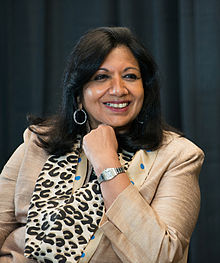

Kiran Mazumdar was born to Gujarati parents in Bangalore, India. She went to
school at Bangalore’s Bishop Cotton Girl's High School, graduating in 1968. She
then attended Mount Carmel College, Bangalore, a women's college offering
pre-university courses as an affiliate of Bangalore University.
She studied
biology and zoology, graduating from Bangalore University with a B.Sc. in
Zoology in 1973. Mazumdar hoped to go to medical school, but did not obtain a
scholarship.
Her father, Rasendra Mazumdar, was the head brewmaster at United Breweries. He
suggested that Kiran study fermentation science, and train to be a brewmaster, a
very nontraditional field for a woman. Mazumdar went to Federation University
(Formerly known as University of Ballarat) in Australia to study Malting and
Brewing.
In 1974 she was the only woman enrolled in the brewing course, and the
top of her class.She earned the degree of Master Brewer in 1975.
She worked as a trainee brewer in Carlton and United Breweries, Melbourne and as
a trainee maltster at Barrett Brothers and Burston, Australia. She also worked
for some time as a technical consultant at Jupiter Breweries Limited, Calcutta
and as a technical manager at Standard Maltings Corporation, Baroda between 1975
and 1977.
However, when she investigated the possibility of further work in
Bangalore or Delhi, she was told that she would not be hired as a master brewer
in India because "It's a man's work She began to look abroad, and was offered a
position in Scotland.
After a brief period as a Trainee Manager at Biocon Biochemicals Limited, of
Cork, Ireland, to learn more about the business, Kiran Mazumdar Shaw returned to
India.
She started Biocon India in 1978 in the garage of her rented house in
Bengaluru with a seed capital of Rs. 10,000. Although it was a joint venture,
Indian laws restricted foreign ownership to 30% of the company. The remaining
70% belonged to Kiran Mazumdar Shaw.
Initially, she faced credibility challenges because of her youth, gender and her
untested business model. Funding was a problem: no bank wanted to lend to her,
and some requested that her father be a guarantor. A chance meeting with a
banker at a social event finally enabled her to get her first financial backing.
She also found it difficult to recruit people to work for her start-up.
Her
first employee was a retired garage mechanic. Her first factory was in a nearby
3,000-square-foot shed. The most complicated piece of equipment in her lab at
that time was a spectrophotometer.
As well, she faced the technological
challenges associated with trying to build a biotech business in a country with
a shaky infrastructure.Uninterrupted power, superior quality water, sterile
labs, imported research equipment, and workers with advanced scientific skills
were not easily available in India at the time.
The company's initial projects were the extraction of papain (an enzyme from
papaya used to tenderize meat) and isinglass (obtained from tropical catfish and
used to clarify beer).
Within a year of its inception, Biocon India was able to
manufacture enzymes and to export them to the United States and Europe, the
first Indian company to do so. At the end of her first year, Kiran Mazumdar Shaw
used her earnings to buy a 20-acre property, dreaming of future expansion.